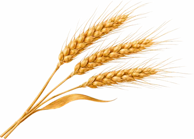
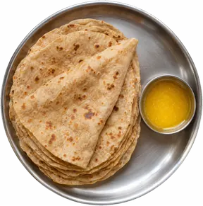
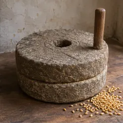
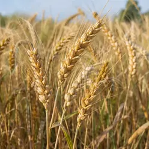
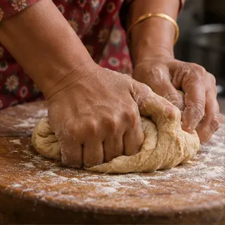
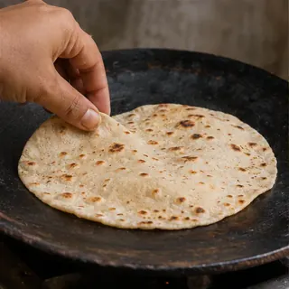
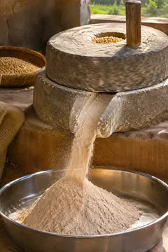
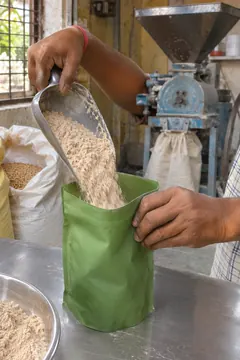

Milled yesterday. At your door today.
Fresh chakki atta from MP Sharbati wheat, milled slowly on natural stone.




Why Atulyash
- 100% whole wheat
Made with single-origin MP Sharbati wheat.
- Chakki fresh
Ground slowly on natural stone chakkis.
- Chokar kept in
The bran stays in the atta.
From the kitchen

How fresh should your atta really be?
Watch on YouTube
Does the way atta is ground really matter?
Watch on YouTube
From wheat to fresh atta
Watch on YouTube
At the everyday table.



We question everything. Why not atta?
We research what is best for our family:
- Skincare
- Cooking oil
- Utensils
- Atta
For atta, we just take their word for it.
The Atulyash way.
From the wheat to your door, in six steps.
 01
01The wheat
Single-origin MP Sharbati. Never blended with other varieties.
 02
02The cleaning
In several stages.

03The stone
Natural stone chakkis. No emery stone, no steel rollers.

04The packing
Packed with minimal handling.
 05
05The milling day
Milled in small batches the day before, delivered the next morning.
 06
06The riders
We deliver with our own riders.
Choose your pack
₹120 a kg. Packed in 2 kg pouches.
 2 kg₹240Order 2 kg
2 kg₹240Order 2 kg- 4 kg₹480Order 4 kg
- 6 kg₹720Order 6 kg
About ₹3.60 a roti.
Freshly milled. Delivered weekly.
We deliver across Delhi NCR. Check your PIN code below.